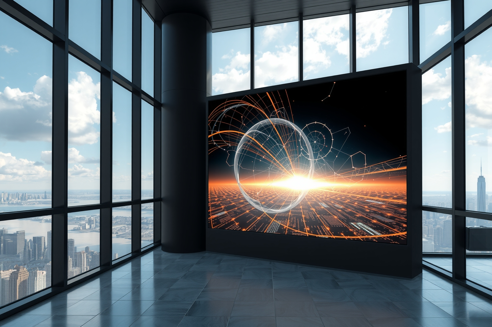
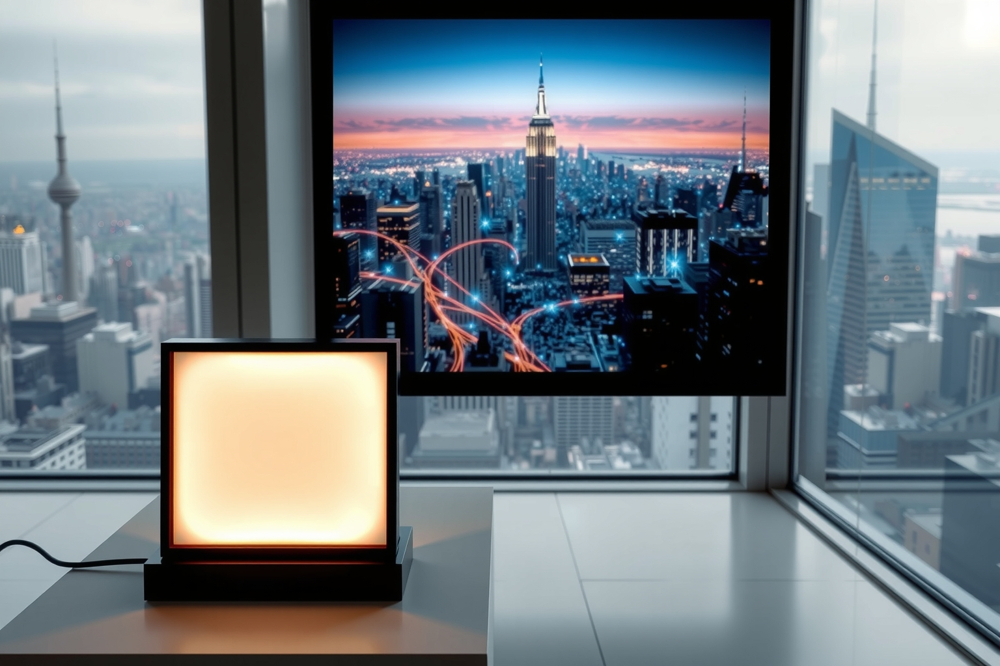
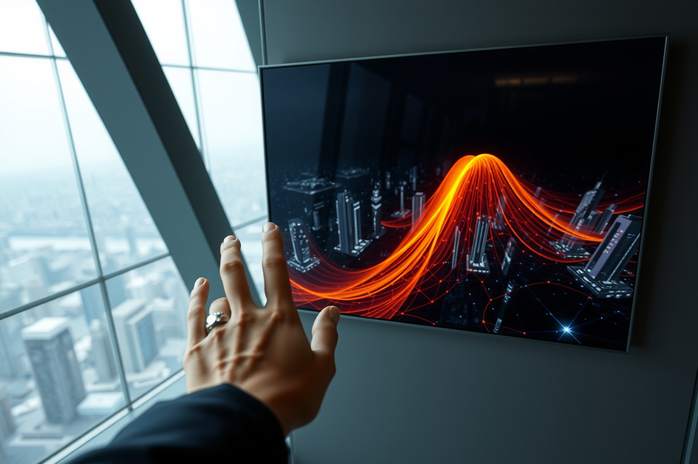
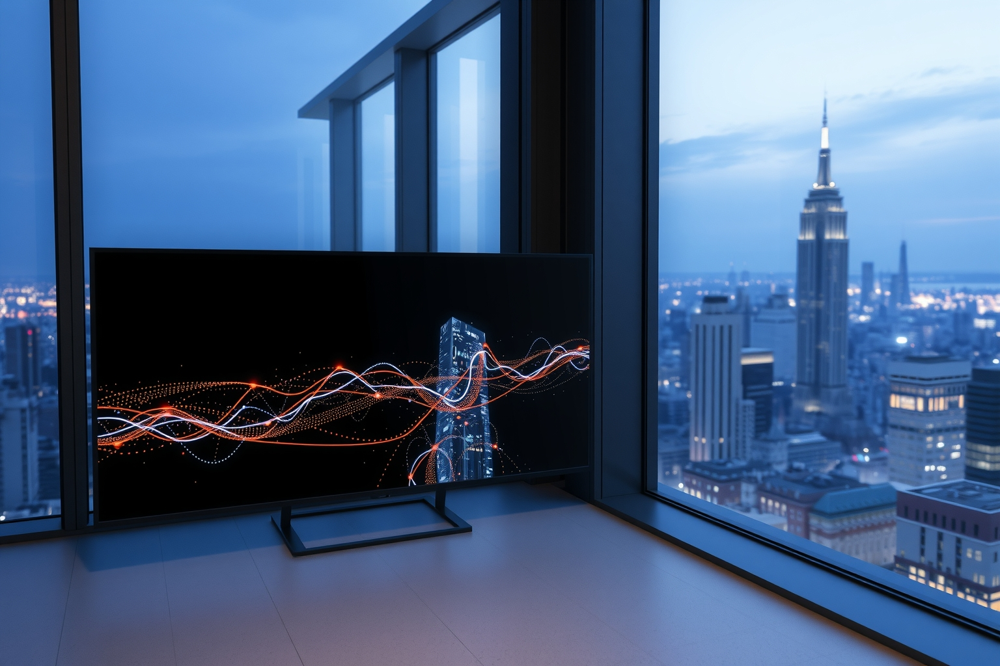

entropy c / The Infinite Window
Real window → physical light sample → deterministic visual instrument. AI authors occasional candidate instruments; it does not render the live frames.




NYC LIGHT + DARK SENSOR REFERENCE + HARDWARE RNG
↓
SIGNED PHYSICAL SEED
↓
AGGREGATE TRAFFIC + TIME + WEATHER (PUBLIC CONTEXT)
↓
APPROVED DETERMINISTIC WEBGPU INSTRUMENT
↓
THE INFINITE WINDOW
AI: proposes a new shader occasionally → compile / deterministic / GPU / safety gates → human approval → signed release